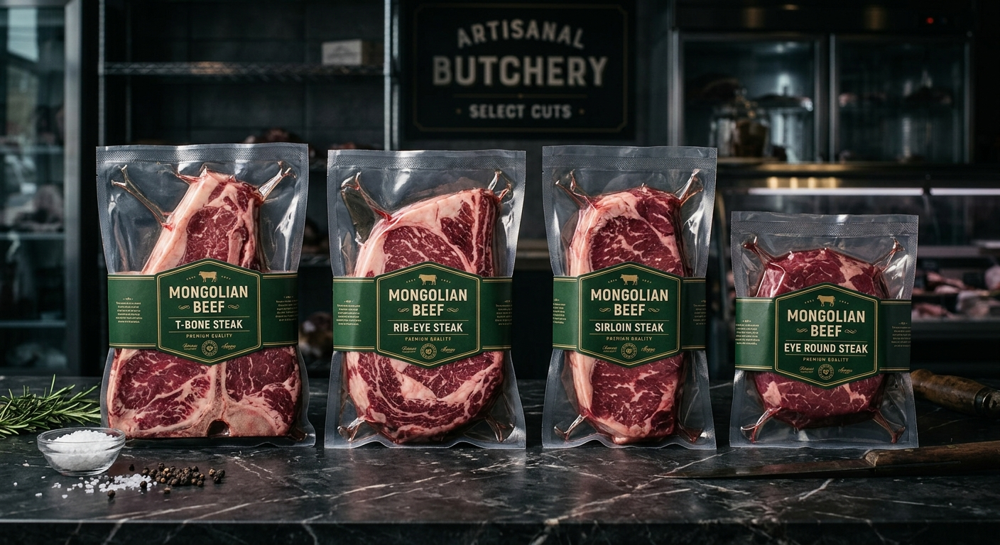

Стэйк
Европ
Төгс Стэйк хийх жор
Гадуураа шарж, дотроо шүүслэг байхаар хийсэн төгс стэйк. Грилл эсвэл хайруулын тавган дээр хийж болно.
Шилмэл сүргийн махаар хийсэн Монгол болон Европ хоолны жорууд
Гадуураа шарж, дотроо шүүслэг байхаар хийсэн төгс стэйк. Грилл эсвэл хайруулын тавган дээр хийж болно.

Монгол гэрийн уламжлалт бууз. Шилмэл сүргийн махаар хийсэн амтат буузны жор.

Шарсан шүүслэг хуушуур. Гэрийн нөхцөлд хийхэд тохиромжтой жор.

Орос гаралтай алдартай хоол. Шарсан махыг сметан соустай хослуулсан амтат хоол.

Монгол гэрийн цуйван. Гурил, мах, ногоог хослуулсан хоол.

Италийн алдартай хоол. Шилмэл махаар хийсэн баялаг соустай спагетти.

Монголын уламжлалт бантан. Шилмэл махаар хийсэн шүүслэг бантан.

Шөөгтэй махыг зөвхөн духан дээр жигнэсэн Roast Beef. Тусгай зоогт тохиромжтой.

Монголын уламжлалт хорхог. Чулуун дээр хийсэн онцгой амт.

Мексикийн алдартай такос. Шилмэл махаар хийсэн амтат такосны жор.